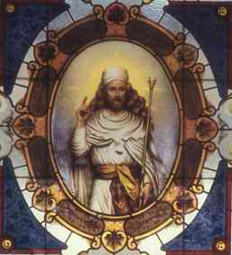

Seratus Tokoh yang Paling Berpengaruh dalam
Sejarah
89. ZOROASTER (628 SM - 551 SM)
"Nabi"-nya Iran, Zoroaster, adalah pendiri Zoroastrianisme, sebuah agama yang berlangsung lebih dari 2000 tahun dan tetap punya penganut hingga kini. Dia juga penulis Gathas, bagian tertua dari Avesta, petunjuk suci pemeluk Zoroaster.
Informasi biografis kita menyangkut Zoroaster (Zarathustra dalam sebutan Iran kuno) adalah tidak lengkap, tapi tampaknya dia dilahirkan kira-kira tahun 628 SM dan daerah yang kini termasuk Iran Utara. Sedikit sekali bisa diketahui masa kecilnya. Sesudah dewasa, dia mengkhotbahkan agama baru yang disusunnya sendiri. Pada tingkat awalnya banyak penentangan; tapi tatkala usianya menginjak empat puluh tahun, dia berhasil menarik Raja Vishtaspa sebagai pemeluknya, seorang penguasa sebuah daerah di utara Iran. Sesudah itu sang Raja jadi sahabatnya dan sekaligus pelindungnya. Menurut kisah tradisionil Iran, Zoroaster hidup hingga umur tujuh puluh tujuh tahun; kematiannya dengan begitu diperkirakan tahun 551 SM.
Teologi Zoroaster merupakan campuran menarik antara monotheisme dan dualisme. Menurut Zoroaster, hanya ada satu Tuhan sejati yang disebutnya Ahura Mazda (dalam sebutan Iran modern: Ormudz). Ahura Mazda ("Tuhan yang bijaksana") menganjurkan kejujuran dan kebenaran. Tapi, penganut Zoroaster juga percaya adanya roh jahat, Angra Mainyu (dalam istilah Persia modern: Ahriman) yang mencerminkan kejahatan dan kepalsuan. Dalam dunia nyata, ini perlambang pertentangan abadi antara kekuatan Ahura Mazda di satu pihak dan Ahriman di lain pihak. Tiap individu bebas memilih ke mana dia berpihak, ke Ahura Mazda atau ke Ahriman. Meskipun pertarungan kedua belah pihak mungkin dekat pada suatu saat, penganut Zoroaster percaya bahwa dalam jangka panjang kekuatan Ahura Mazda akan keluar sebagai pemenang. Teologi mereka juga termasuk keyakinan penuh adanya hidup sesudah mati.
Dalam masalah-masalah etika, agama Zoroaster menekankan arti penting kejujuran dan kebenaran. Ascetisme, hidup ugal-ugalan, zina, ditentang keras. Penganut Zoroaster melaksanakan pelbagai ibadah agama yang menarik, beberapa di antaranya dipusatkan pada pemujaan terhadap api. Misalnya, api suci senantiasa dibiarkan berkobar di kuil Zoroaster. Tapi, yang paling nyata dalam ibadah mereka adalah cara melenyapkan jenasah, bukannya dikubur atau dibakar, melainkan diletakkan di atas menara dibiarkan habis dimakan burung pemakan bangkai. (Burung-burung itu biasanya melalap mangsanya hingga tinggal tulang melulu dalam tempo beberapa jam).
Meskipun Zoroatrianisme punya macam-macam elemen yang serupa dengan agama-agama Iran yang lebih lama, tak tampak tersebar luas di masa Zoroaster sendiri. Tapi, daerah tempat dia hidup kait-berkait bersama dengan Kekaisaran Persia di bawah Cyrus Yang Agung di pertengahan abad ke-16 SM pada saat matinya Zoroaster. Dalam masa dua abad kemudian, agama itu diterima oleh Raja-raja Persia dan memperoleh pengikut yang lumayan. Sesudah Kekaisaran Persia ditaklukkan oleh Alexander Yang Agung di akhir pertengahan abad ke-4 SM, agama Zoroaster mengalami kemunduran deras. Tapi, akhirnya orang-orang Persia memperoleh kemerdekaannya kembali, pengaruh Hellenistis merosot, dan ada semacam kebangkitan kembali Agama Zoroaster. Di masa dinasti Sassanid (226 - 651 M) agama Zoroaster diterima sebagai agama resmi negeri Persia.
Sesudah ditaklukkan Arab di abad ke-7 M, sebagian besar penduduk Persia lambat laun memeluk agama Islam (dalam beberapa hal dengan kekerasan, walau pada prinsipnya kaum Muslimin punya sikap toleran kepada agama lain). Sekitar abad ke-10, sebagian sisa penganut agama Zoroaster lari dari Iran ke Hormuz, sebuah pulau di teluk Persia. Dari sana mereka atau turunannya pergi ke India tempat mereka mendirikan semacam koloni. Orang Hindu menyebut mereka Parsees karena asal mereka dari Persia. Kini ada sekitar l00.000 lebih kelompok Parsees di India, umumnya tinggal di dekat kota Bombay tempat mereka membentuk suatu kelompok kehidupan masyarakat yang makmur. Zoroastrianisme tak pernah melenyap seluruhnya di Iran; hanya sekitar 20.000 penganut masih ada di negeri itu.
Kini, di dunia penganut Zoroaster lebih sedikit jumlahnya ketimbang kaum Mormon maupun Christian Scientists. Tapi, Mormonisme dan Christian Science tumbuhnya belum lama; dilihat dari perjalanan sejarah, jumlah keseluruhan pengikut Zoroaster jauh lebih besar. Ini alasan utama mengapa Zoroaster dimasukkan ke dalam buku ini, sedangkan Joseph Smith dan Mary Baker tidak dimasukkan
Lebih dari itu, Zoroatrianisme telah memberi pengaruh kepada agama-agama lain, seperti Yudaisme dan Nasrani. Bahkan, pengaruhnya yang lebih besar kentara pada Manichaeisme, agama yang didirikan oleh Mani, yang mengambil oper ide Zoroaster tentang pertentangan antara roh baik dan roh jahat dan mengembangkannya menjadi agama yang kompleks dan bersifat memaksa. Untuk sementara waktu kepercayaan baru yang ia dirikan merupakan agama besar dunia, walaupun kemudian punah seluruhnya.
Seratus Tokoh yang Paling Berpengaruh dalam Sejarah
Michael H. Hart, 1978
Terjemahan H. Mahbub Djunaidi, 1982
PT. Dunia Pustaka Jaya
Jln. Kramat II, No. 31A
Jakarta Pusat